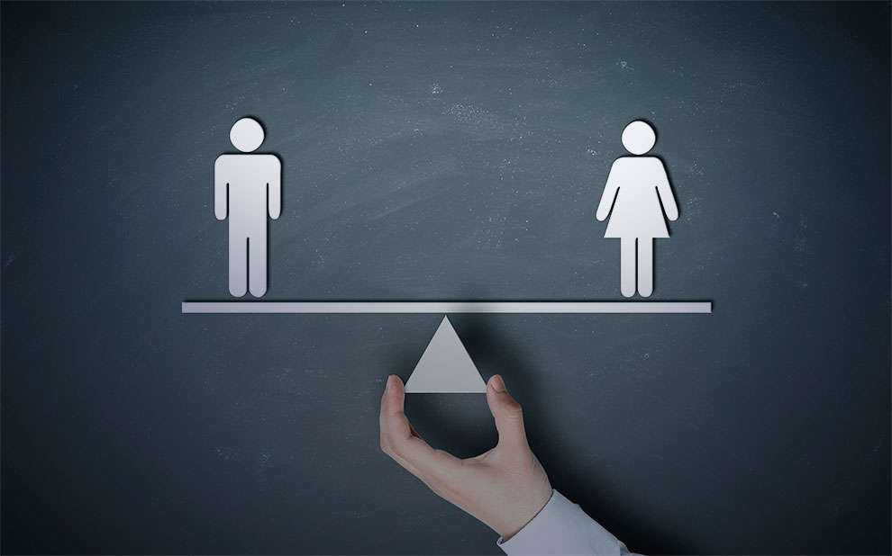

Também conhecida como igualdade sexual, esta é considerada a base para a construção de uma sociedade livre de preconceitos e discriminações.
Todas as responsabilidades, direitos e oportunidades devem ser igualmente concedidas para todos os gêneros, sem haver qualquer tipo de restrição baseada no fato de determinada pessoa ter nascido com o sexo masculino ou feminino.
A luta pela igualdade de gênero se intensificou em meados do século XX, impulsionada, principalmente, pelo movimento feminista.
O Brasil é um dos países com maior desigualdade entre os gêneros. De acordo com informações da Pesquisa Nacional por Amostras de Domicílios (Pnad), em 2014, as trabalhadoras brasileiras recebem aproximadamente 27% menos do que os homens que desempenham funções similares. O aspecto profissional é apenas um exemplo de muitos existentes no país e que fazem com que o abismo da desigualdade entre os gêneros continue enorme.
Discriminação direta – Normas ou práticas que diretamente produzem um tratamento desigual e desfavorável a uma pessoa em função do sexo.
Discriminação indireta – Medida ou prática aparentemente neutra, que prejudica de modo desproporcionado os indivíduos de um dos sexos
Declaração Universal dos Direitos Humanos foi adaptada pela ONU (1948): “Todos os Seres humanos podem invocar os direitos e as liberdades proclamadas presente Declaração, sem distinção alguma, nomeadamente de raça, de cor, de sexo, de língua, de religião de opinião política ou outra, de origem nacional ou social, de fortuna, de nascimento ou de qualquer outra situação. Além disso, não será feita nenhuma distinção fundada no estatuto político, jurídico ou internacional do país ou do território da naturalidade da pessoa, seja esse país ou território independente, sob tutela, autónomo ou sujeito a alguma limitação de soberania” Art.º 2º
Convenção para a eliminação de todas as formas de discriminação da mulher (1979).
Os Estados Partes tomam todas as medidas apropriadas (…) com o fim de (…) assegurar: (…) a eliminação de qualquer concepção estereotipada dos papéis dos homens e das mulheres a todos os níveis e em todas as formas de ensino (…), em particular revendo os livros e programas escolares (…): Art.º 10º.
Meu nome é Lívia Gabrielly, tenho 16 anos e sou muito introvertida. Fazer este curso foi o meu priemeiro passo para a entrada no mundo virtal
Promovido pela Microsoft e pela JA Brasil, este site foi criado durante o período do curso